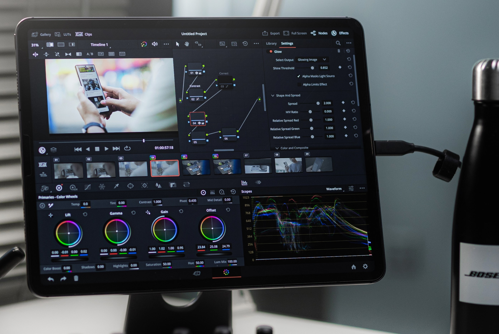

Video Editing Techniques for Capturing and Maintaining Audience Attention

Video is a powerful medium that can capture and hold the attention of your audience. But with so much content available, it's important to create videos that not only capture attention but also maintain it throughout the duration of the video. In this blog post, we'll explore some video editing techniques that can help you achieve this goal.
1. Start with a Hook
The first few seconds of a video are critical in grabbing the attention of your audience. Start with a hook that captures their interest and makes them want to keep watching. This can be a teaser of what's to come or a surprising opening shot that immediately grabs their attention.
2. Keep it Short
Attention spans are short, especially when it comes to online video. Keep your videos short and sweet, ideally under two minutes. This will ensure that your audience stays engaged and doesn't lose interest halfway through.

3. Use Jump Cuts
Jump cuts are a popular technique used in video editing to create a fast-paced, energetic feel. They involve cutting out parts of the footage to create a quick jump in time, which can help keep the audience's attention focused. However, be careful not to overuse jump cuts as they can become distracting.
4. Add Text and Graphics
Text and graphics can be a great way to keep your audience engaged and informed. Use captions to highlight important information, or add animated graphics to illustrate your points. This can help break up the monotony of talking heads and keep your audience interested.

5. Use Music and Sound Effects
Music and sound effects can add emotion and energy to your videos. Use them to create a mood or to emphasize important points. Be careful not to use copyrighted music without permission or purchase a license for it.
6. Cut out the Fluff
When editing your video, be ruthless with cutting out unnecessary footage. Keep your video focused on your message and remove anything that doesn't add value. This will help keep your video short and engaging.

7. End with a Call to Action
End your video with a call to action, such as subscribing to your channel or visiting your website. This not only gives your audience a next step to take but also reinforces your message.
In conclusion, video editing techniques can be used to capture and maintain audience attention. Start with a hook, keep it short, use jump cuts, add text and graphics,
use music and sound effects, cut out the fluff, and end with a call to action. With these techniques, you can create engaging videos that keep your audience's attention
from start to finish.